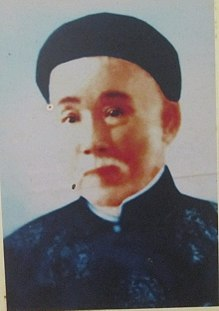

Vào khoảng năm 1910, đồng bào Sa-Đéc khi ấy đều biết tiếng cụ Đặng-Thúc-Liên với tiệm thuốc bắc "Phước-Hưng-Đông" do cụ sáng lập, tại đường mé sông thân trên đầu cầu sắt làng Vĩnh-Phước, thành-phố Sa-Đéc.

ĐẶNG-THÚC-LIÊN.
Thật ra, cụ Đặng-Thúc-Liên không phải là người sinh quán ở Sa-Đéc chính là quê vợ của cụ. Cụ sinh năm 1867, tại làng Tân-Phú (tục gọi là thôn vườn trầu), quận Hốc-Môn, tỉnh Gia-Định. Thân-phụ của cụ là một vị đại-thần triều Minh-Mạng, làm đến chức Án-Sát-Sứ tỉnh Bình-Thuận (Trung-Việt). Cụ hiệu là Mộng-Liên, nổi tiếng danh-sĩ. Hán-học uyên thâm, tinh thông y-dược, cụ được vua Đồng-Khánh trọng dụng. Nhưng được ít lâu, cụ cáo quan, trở về Gia-Định.
Bấy giờ, vì cụ từng giao-du khắn-khít với các cụ Phan-Châu-Trinh, Phan-Bội-Châu, Huỳnh-Thúc-Kháng, khi cụ còn ở ngoài Bắc, do đó nhà đương cuộc Pháp tình nghi cụ hoạt động cách mạng nên bắt giam một lúc. Một viên-chức cao cấp người Pháp tên MAST, tùng sự tại Soái phủ Nam-kỳ, mộ Hán-văn, thấy cụ là bậc túc nho, liền vận động phóng thích cụ để cụ dạy ông học Tứ-Thơ, Ngũ-Kinh.
Sau đó ông Mast lại tiến cử cụ với Soái phủ Pháp. Cụ được bổ làm Kinh lịch tỉnh Sóc-Trăng, chẳng bao lâu đổi về Sa-Đéc. Tại đây, cụ kết hôn với bà là nguoi quê quán ở làng Tân-Qui-Đông.
Năm 1907, cụ trở lên Sài-Gòn, hợp tác với cụ Gilbert Trần-Chánh-Chiếu làm báo "Nam-Kỳ". Giai đoạn này, cụ và Trần-Chánh-Chiếu thật sự hoạt động cách mạng, và chủ trương mở mang kinh tế về vận dụng tài chánh vào những công cuộc ích quốc lợi dân. Đầu tiên, cụ và Trần-Chánh-Chiếu lập một khách sạn để hiệu là "Nam-Trung" (ở cuối đường De La Somme, nay là đường Hàm-Nghi) tại Sài-Gòn. Rồi lập riêng một tiệm thuốc Bắc hiệu "Nam-Thọ-Xuân" ở số 95 đường Charner (nay là đường Nguyễn-Huệ). Đồng thời có cụ Nguyễn-An-Khương (thân-sinh ông Nguyễn-An-Ninh) cũng lập ra khách sạn "Chiêu Nam-Lầu". Ấy là những cơ sở kinh tài, và là nơi tụ họp mật của các nhà ái-quốc.
It lâu, cụ và Gilbert Chiếu lại lập một công-ty kinh doanh khác gọi là "Minh-Tân Công-Nghệ", đặt trụ sở tại một căn phố ở đường Charner (Nguyễn-Huệ, ngang hãng xe Renault cũ). Cố nhiên, dần dần tai mắt của người Pháp dòm ngó tình nghi. Mọi công cuộc phải đình trệ nửa chừng. Để giữ mình, cụ Đặng-Thúc-Liên lui về quê vợ ở làng Tân-Qui-Đông, Sa-Đéc, rồi quay theo nghề y-dược, mở tiêm thuốc bắc, hiệu tiệm là "Phước-Hưng-Đông", tại thành phố Sa-Đéc như đã nói trên.
Một thời gian sau, cụ phó thác tiệm thuốc ấy và gia sản gồm vài mươi mẩu ruộng đất, với 5 đứa con thơ cho vợ gìn giữ nuôi nấng. Rồi cụ xách va-li đi chơi và làm thuốc, khi thì dạo khắp lục-tỉnh, khi thì thăm viếng cố-đô Huế và Hà-Nội. Đến khi mỏi gối chồn chân trên bước giang-hồ, lịch lãm nhân-tình thế-sự, cụ trở lại Sài-Gòn viết báo. Tên tuổi cụ phô bày trên các báo: Nông-Cổ Mín-Đàm, Lục-Tỉnh Tân-Văn, Công-Luận báo, Đại-Việt tạp chí, Đồng-Tháp thời báo và Trung-Lập báo.
Cụ dí dỏm tự trào:
Họ đồn Đặng-Thúc-Liên chơi quá lố,
Có hay không? Giã ngộ đó mà thôi!
Gẫm bao lâu sống sót trên đời?
Nhịn hóa dại, chơi đi, kẻo uổng!
Nhưng trách nhiệm chớ nên bỏ luống,
Đức tài rèn đem cống hiến nhân dân.
Làm sao cũng giữ tinh thần,
Có giải trí, ăn, mần mới giỏi...
Phong-lưu tài tuấn, cụ lại rủ các bạn tri-âm lập ra rạp hát nhỏ ở làng Vĩnh-Phước, tỉnh Sa-Đéc, chấn-chỉnh hát bội, rồi đưa sáng kiến áp dụng nghệ thuật đờn ca Trung-Nam bày ra diễn kịch, sau này gọi là cải lương. Chính do cụ đề xướng trước. Bắt nguồn từ đó, được manh nha sâu rộng trong các tỉnh miền Nam lần lượt lập gánh. Lúc bấy giờ ở Mỹ-Tho, tại làng Vĩnh-Kim có bà Trần-Ngọc-Diện (tục gọi là cô Ba-Diện), người phụ nữ đầu tiên đứng ra lập gánh hát lấy tên là "Đồng-Nữ-Ban", diển viên toàn là phụ nữ con nhà gia giáo trong làng. Mục đích của bà lập gánh để tuyên truyền cho tư tưởng dân-tộc và cách-mạng. Đoàn nổi tiếng với hai vỡ tuồng "Võ Đông Sơ" và "Giọt Lệ Chung Tình". Đoàn hát "Đồng-Nữ-Ban" lưu diển hai năm để lấy tiền giúp vào việc nghĩa rồi giải tán.
Ở Sa-Đéc, sau do ông André Thận cũng lập gánh, gọi là gánh Thầy Tư Thận tại thành-phố Sa-Đéc. Rồi đó, nối đuôi là gánh hát của Thầy Năm-Tú, gánh Văn-Hi-Ban-Huỳnh-Kỳ ở Mỹ-Tho. Thời kỳ này, cụ Đặng-Thúc-Liên được chánh-phủ Pháp chú ý đến việc làm của cụ rất nhiều.
Năm 1918, cụ được Toàn-quyền Albert Sarraut mời cụ viết tuồng hát cổ-động quốc-trái. Cụ hiệp tác với cụ Nguyễn-Viên-Kiều đặt vở tuồng "Pháp-Việt nhứt gia", tích đức Gia-Long mông trần ở Phú-Quốc, nhờ Bá-Đa-Lộc về Pháp cầu viện v.v... Cụ làm thầy tuồng, hiệp cùng các nhà viết báo ở Sài-Gòn đóng tuồng đó tại nhà hát Tây (trụ-sở Hạ-Viên bây giờ) trong ngày 11-11-1918, ngày này là gánh hát trở về Sài-Gòn hát lúc đình chiến và đi khắp lục-tỉnh, gọi là gánh Bầu-Rô (do tên Toàn-quyền SARRAUT gọi tắt là RÔ).
Đến năm 1931, cụ Đặng-Thúc-Liên xin được phép xuất bản tờ "Việt-Dân-Báo".
Năm 1934, nhằm mục-đích bảo-vệ Đông-Y-Sĩ đã nhiều phen điêu-đứng, cụ đã dày công sáng lập hội Việt-Nam Y-Dược.
Lúc quân Nhật chiếm đóng Đông-Dương, để tránh nạn bom tàn khóc ném xuống Sài-Gòn-Chợ-Lớn mỗi ngày, cụ đưa gia-đình trở về quê vợ ở làng Tân-Qui-Đông, châu-thành Sa-Đéc.
Năm 1945, đêm 10 tháng 7, cụ cảm mạo rất nặng, dây dưa nằm liệt hơn một tháng, đến đúng ngọ ngày 16 tháng 8, cụ từ-trần tại Sa-Đéc và chôn cất tại làng Tân-Qui-Đông, hưởng thọ 85 tuổi.
Cụ Mộng-Liên Đặng-Thúc-Liên là nhà đạo-đức văn-chương triết-học cao thâm. Nho-Y gồm đủ. Cụ cũng là một nhà ái-quốc tiền-phong, một ký-giả tiền-bối đáng kính mến.
Cụ để lại cho nhiều tác-phẩm giá trị:
1. Quốc-văn hồn
2. Cao-Hoàng-Đế diển ca, tức Gia-Long phục quốc
3. Trương-Vỉnh-Ký hành trạng
4. Hán-văn thi tập
5. Việt-âm thi tập
6. Tri-y tiện dụng
Bình sanh cụ thích giao tiếp với thanh-niên, theo câu:
Tối hảo lão thanh-niên
Thả thông tân cựu học
Phong lưu danh lợi không
Vô ngã tiện thị túc
Nghĩa: Rất tốt già như trẻ
Văn chương cũ mới thông
Phong lưu danh lợi đủ
Ta có cũng như không.